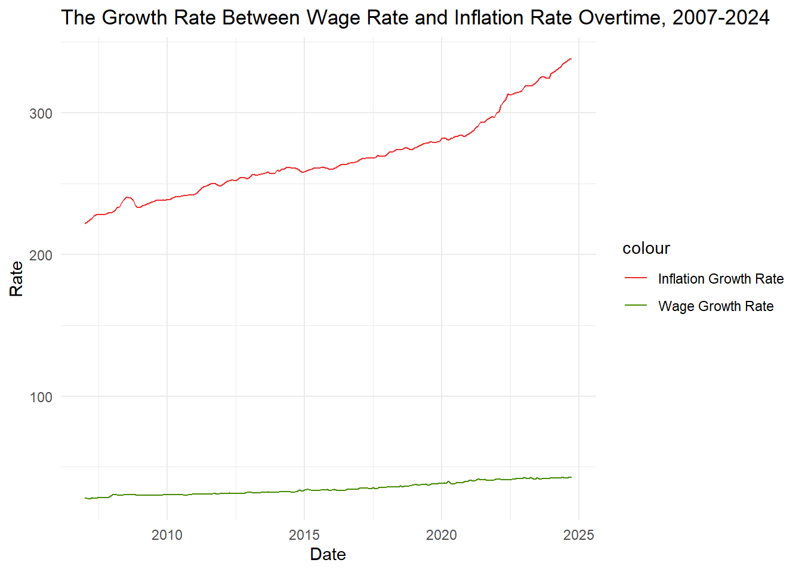
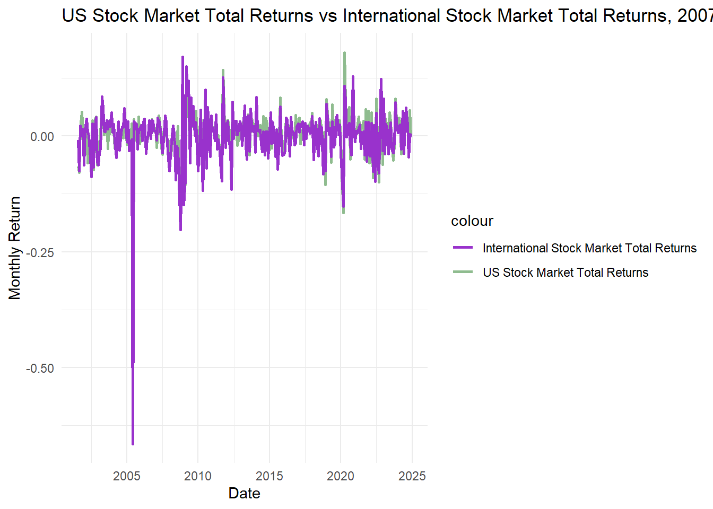
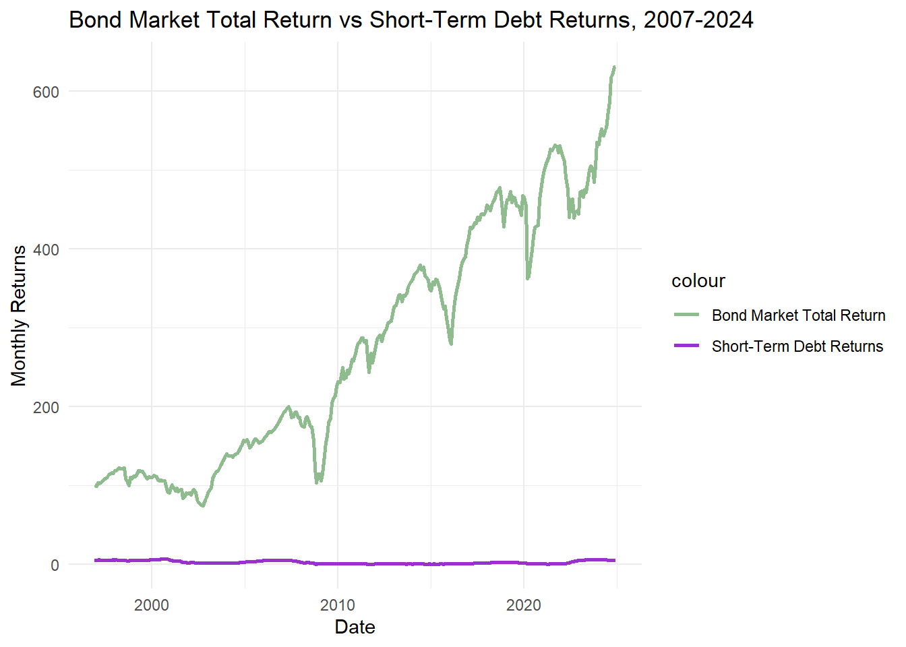

library(httr2)
library(jsonlite)
library(tidyverse)
library(gt)
library(dplyr)
library(gtExtras)
library(tidyr)
library(ggplot2)
library(stringr)
library(DT)
alpha_vantage_key <- "657RUGIZTAGDBDOF"
fred_key <- "2220adc19cf9dd1075bb3d55cadc8031"
get_alpha_data <- function(symbol, interval = "TIME_SERIES_DAILY", api_key) {
url <- paste0("https://www.alphavantage.co/query?function=", interval,
"&symbol=", symbol, "&apikey=", api_key, "&outputsize=full&datatype=json")
response <- request(url) |> req_perform()
if (response |> resp_status() != 200) {
stop("Failed to retrieve Alpha Vantage data. HTTP Status: ", response |> resp_status())
}
data <- fromJSON(response |> resp_body_string())
timeseries <- data[["Time Series (Daily)"]]
if (is.null(timeseries)) stop("Failed to retrieve Alpha Vantage data for symbol: ", symbol)
df <- as.data.frame(do.call(rbind, timeseries))
df$date <- rownames(df)
rownames(df) <- NULL
df <- df |>
rename(close = `4. close`) |>
mutate(
date = as.Date(date),
close = as.numeric(close)
) |>
arrange(date)
df <- df |>
mutate(month = format(date, "%Y-%m")) |>
group_by(month) |>
summarize(
monthly_return = last(close) / first(close) - 1,
.groups = 'drop'
) |>
mutate(date = as.Date(paste0(month, "-01"))) |>
select(date, monthly_return)
return(df)
}
get_fred_data <- function(series_id, api_key) {
url <- paste0("https://api.stlouisfed.org/fred/series/observations?series_id=",
series_id, "&api_key=", api_key, "&file_type=json")
response <- request(url) |> req_perform()
if (response |> resp_status() != 200) {
stop("Failed to retrieve FRED data. HTTP Status: ", response |> resp_status())
}
data <- fromJSON(response |> resp_body_string())
if (is.null(data$observations)) stop("No observations found for series: ", series_id)
df <- as.data.frame(data$observations) |>
mutate(
date = as.Date(date),
value = suppressWarnings(as.numeric(value))
) |>
filter(!is.na(value)) |>
select(date, value)
return(df)
}Mini-Project #04: Monte Carlo-Informed Selection of CUNY Retirement Plans
Introduction
Newly hired at CUNY, I have thirty days to choose between one of two retirement plans. These two plans can be viewed here. This is an early choice for faculty and is important as it is essentially permanent and cannot be changed. In this project, I will use historical financial data and a bootstrap inference strategy to estimate the probability that one plan is better than the other.
The two plans are better explained below:
Teachers Retirement System (TRS)
The TRS plan is a traditional pension plan: after retirement, the employer continues to pay employees a fraction of their salary until death. This type of plan is called a “defined-benefit” because the retirement pay is fixed a priori and the employer takes the market risk. If the market under performs expectations, CUNY has to make up the gap; if the market over performs expectations, CUNY pockets the excess balance.
Employees pay a fixed percentage of their paycheck into the pension fund. The contribution rates are based on employee’s salary amount, and are as follows:
- $45,000 or less: 3%
- $45,001 to $55,000: 3.5%
- $55,001 to $75,000: 4.5%
- $75,001 to $100,000: 5.75%
- $100,001 or more: 6%
Then, the retirement benefit is calculated based on the Final three years salary of the employee, which changed after 2024. Before 2024, it was based on the prior five years.
If N is the number of years served, the annual retirement benefit is:
- 1.67% * FAS * N, if N is less than 20 years
- 1.75% * FAS * N, if N is equal to 20 years
- (35% + 2% * N) * FAS, if N is greater than 20 years
In each case, the benefit is paid out equally over 12 months.
The benefit is increased annually by 50% of the CPI, rounded up to the nearest tenth of a percent. For example, a CPI of 2.9% gives an inflation adjustment of 1.5%. The benefit is capped below at 1% and above at 3%, so a CPI of 10% leads to a 3% inflation adjustment while a CPI of 0% leads to a 1% inflation adjustment.
The inflation adjustment is effective each September and the CPI used is the aggregate monthly CPI of the previous 12 months; so the September 2024 adjustment depends on the CPI from September 2023 to August 2024.
Optional Retirement Plan (ORP)
The ORP plan is more similar to a 401(k) plan offered by a private employer. The employee and the employer both make contributions to a retirement account which is then invested in the employee’s choice of mutual funds. Those investments grow “tax-free” until the employee begins to withdraw them upon retirement. If the employee does not use up the funds, they are passed down to that employee’s spouse, children, or other heirs; if the employee uses the funds too quickly and zeros out the account balance, no additional retirement funds are available. This type of plan is called a defined-contribution plan as only the contributions to the retirement account are fixed by contract: the final balance depends on market factors outside of the employee’s control.
When retired, an employee has access to the funds and can withdraw at any rate they wish. Usually, withdrawing 4% of the value per year is the best practice, but funds in the plan will continue to experience market returns.
The funds available in an ORP account depend strongly on the investments chosen. For this project, we will assume that participants invest in a Fidelity Freedom Fund with the following asset allocation:
- Age 25 to Age 49:
- 54% US Equities
- 36% International Equities
- 10% Bonds
- Age 50 to Age 59:
- 47% US Equities
- 32% International Equities
- 21% Bonds
- Age 60 to Age 74:
- 34% US Equities
- 23% International Equities
- 43% Bonds
- Age 75 or older:
- 19% US Equities
- 13% International Equities
- 62% Bonds
- 6% Short-Term Debt
Both the employee and the employer make monthly contributions to the employee’s ORP account. These returns are calculated as a percentage of the employee’s annual salary, which is the same rate as the TRS:
- $45,000 or less: 3%
- $45,001 to $55,000: 3.5%
- $55,001 to $75,000: 4.5%
- $75,001 to $100,000: 5.75%
- $100,001 or more: 6%
The employer contribution is fixed at: - 8% for the first seven years of employment at CUNY - 10% for all years after
Data Acquisition
For this project, we will use data from two economic and financial data services. They are as follows:
- AlphaVantage: a commercial stock market data provider
- FRED: the Federal Reserve Economic Data repository maintained by the Federal Reserve Bank of St. Louis
To begin my Monte Carlo analysis, I will need historical data covering the following. For ease, linked the data I plan to use to each point.
- Wage Growth
- Inflation
- US Equity Market Total Returns
- International Equity Market total returns
- Bond Market Total Returns
- Short-term debt returns
Click here to see how to set up the pathway
Now, we must retrieve the data from these sites.
Click here to see how the data was downloaded into R
# Wage Growth
wage_growth <- get_fred_data("SMU36935610500000003", fred_key) |>
mutate(month = format(date, "%Y-%m")) |>
group_by(month) |>
summarize(wage_growth = last(value), .groups = 'drop') |>
mutate(date = as.Date(paste0(month, "-01"))) |>
select(date, wage_growth) |>
mutate(salary = wage_growth * 40 * 52)
# Inflation
inflation <- get_fred_data("CUURA101SA0", fred_key) |>
mutate(month = format(date, "%Y-%m"))|>
group_by(month) |>
summarize(inflation = last(value), .groups = 'drop') |>
mutate(date = as.Date(paste0(month, "-01")))|>
select(date, inflation)
# U.S. Market Total Returns
us_equity_data <- get_alpha_data("SPY", "TIME_SERIES_DAILY", alpha_vantage_key) |>
rename(us_equity_return = monthly_return)
# International Stock Market Total Returns
international_equity_data <- get_alpha_data("EFA", "TIME_SERIES_DAILY", alpha_vantage_key) |>
rename(international_equity_return = monthly_return)
# 5. Bond Market Total Returns
bond_market_return <- get_fred_data("BAMLHYH0A3CMTRIV", fred_key) |>
mutate(month = format(date, "%Y-%m")) |>
group_by(month) |>
summarize(bond_return = last(value), .groups = 'drop') |>
mutate(date = as.Date(paste0(month, "-01"))) |>
select(date, bond_return)
# Short-Term Debt Returns
short_debt_data <- get_fred_data("DTB3", fred_key) |>
mutate(month = format(date, "%Y-%m")) |>
group_by(month) |>
summarize(short_term_debt_rate = last(value), .groups = 'drop') |>
mutate(date = as.Date(paste0(month, "-01"))) |>
select(date, short_term_debt_rate)
# Merge All Data
data <- list(
wage_growth,
inflation,
us_equity_data,
international_equity_data,
bond_market_return,
short_debt_data
) |>
reduce(full_join, by = "date") |>
arrange(date) |>
drop_na() datatable(data)Initial Analysis
First, I want to see the difference between certain aspects of our data. Firstly, I want to see the difference between the growth in hourly wage rate and inflation. This can help me anticipate how much the value of money will continue to be in the future compared to the price of goods.
Click here to see how to make the line graph
wage_vs_inflation <- list(
wage_growth,
inflation
) |>
reduce(full_join, by = "date") |>
arrange(date) |>
drop_na() |>
select(-salary)
Overtime <- ggplot(wage_vs_inflation, aes (x = date)) +
geom_line(aes(y = wage_growth, color = "Wage Growth Rate")) +
geom_line(aes(y = inflation, color = "Inflation Growth Rate")) +
scale_color_manual(values = c("Wage Growth Rate" = "chartreuse4", "Inflation Growth Rate" = "firebrick2")) +
labs(title = "The Growth Rate Between Wage Rate and Inflation Rate Overtime, 2007-2024", x = "Date", y = "Rate") +
theme_minimal()print(Overtime)
Below shows the difference between the United States Stock Market Total Returns and the International Stock Market Total Returns. This can show me how well the United States’ stock market is doing compared to the rest of the world.
Click here to see how to make the line graph
US_vs_international <- list(
us_equity_data,
international_equity_data
) |>
reduce(full_join, by = "date") |>
arrange(date) |>
drop_na()
Overtime2 <- ggplot(US_vs_international, aes (x = date)) +
geom_line(aes(y = us_equity_return, color = "US Stock Market Total Returns"), linewidth = 1) +
geom_line(aes(y = international_equity_return, color = "International Stock Market Total Returns"), linewidth = 1) +
scale_color_manual(values = c("US Stock Market Total Returns" = "darkseagreen", "International Stock Market Total Returns" = "darkorchid")) +
labs(title = "US Stock Market Total Returns vs International Stock Market Total Returns, 2007-2024", x = "Date", y = "Monthly Return") +
theme_minimal()print(Overtime2)
The following graph shows the relationship between the Bond Market Total Returns and Short-Term Debt Returns.
Click here to see how to make the line graph
Bondreturn_vs_shortdebt <- list(
bond_market_return,
short_debt_data
) |>
reduce(full_join, by = "date") |>
arrange(date) |>
drop_na()
Overtime3 <- ggplot(Bondreturn_vs_shortdebt, aes (x = date)) +
geom_line(aes(y = bond_return, color = "Bond Market Total Return"), linewidth = 1) +
geom_line(aes(y = short_term_debt_rate, color = "Short-Term Debt Returns"), linewidth = 1) +
scale_color_manual(values = c("Bond Market Total Return" = "darkseagreen", "Short-Term Debt Returns" = "darkorchid")) +
labs(title = "Bond Market Total Return vs Short-Term Debt Returns, 2007-2024", x = "Date", y = "Monthly Returns") +
theme_minimal()print(Overtime3)
Now, I want to know the average monthly average of each of these data points. The following can be seen below.
Click here to see how the averages were calculated
averages <- data.frame(
Average = c("Wage_Average", "Inflation_Average", "US_Stock_Market_Return_Average", "International_Stock Market_Return_Average", "Bond_Market_Return_Average", "Short_Term_Debt_Return_Average"),
Value = c(wage_average <- mean(wage_growth$wage_growth),
inflation_average <- mean(inflation$inflation),
US_Market_average <- mean(us_equity_data$us_equity_return),
international_average <- mean(international_equity_data$international_equity_return),
bond_average <- mean(bond_market_return$bond_return),
short_term_debt_average <- mean(short_debt_data$short_term_debt_rate))) datatable(averages)Historical Comparison
To conduct this comparison, we must make some assumptions. Firstly, we will assume that we joined CUNY in the first month of the historical data, January 1, 2007, and retired in the final month of the data, October 1, 2024. Since the average salary in New York in 2007 was $58,094.40, we will assume a starting salary of $60,000.
January_salary <- wage_growth[format(wage_growth$date, "%m") == "01", ] |>
mutate(difference = salary - lag(salary))
datatable(January_salary)Here we can see the salary increase each January 1st from 2007 to 2024. To stay about average with the wage increase, I will assume that I get a raise every 5 years. The first raise will be $5,000, the second will be $7,000, and the final one will be $12,000. This will create the following salaries, per year:
- 2007 - 2011: $60,000
- 2012 - 2016: $65,000
- 2017 - 2021: $72,000
- 2022 - 2024: $84,000
Though these raises seem random, they are selected to put us near the New York salary average by 5-year increments.
Now, let’s see how much money we put into the pension plan over our time as an employee.
years1_to_5 <- (.045 * 60000) * 5
years6_to_10 <- (.045 * 65000) * 5
years11_15 <- (.045 * 72000) * 5
years15_to_17 <- (.0575 * 84000) * 3
total_paid <- (years1_to_5 + years6_to_10 + years11_15 + years15_to_17)
print(total_paid)[1] 58815Thus, over our career, we would have paid $58,815 worth of pension to the state. Now, let’s see which option of retirement would be better for us to take.
TRS:
Since 2007 to 2024 is only 17 years, we fall under the first bracket with the following equation: 1.75% * FAS * N, if N is equal to 20 years.
Since we made $84,000 for our final three years, 2022, 2023, and 2024, our final average salary would be $84,000.
month_one_TRS <- (.0167 * 84000 * 17) / 12
print(month_one_TRS)[1] 1987.3Thus, our first month of retirement with this plan will leave us with $1,987.30.
ORP
For this plan, it is recommended that you only take 4% out a year. Thus, once we get our total, we will divide it by four.
Click here to see how the math was calculated
overall_ORP <- ((60000 * .045 + 60000 * .08) * 5) + ((65000 * .045 + 65000 * .08) * 2) + ((65000 * .045 + 60000 * .1) * 3) + (((72000 * .045 + 72000 * .10) * 5) + ((84000 * .045 + 84000 * .1) * 2))
Age43_to_49 <- ((60000 * .045 + 60000 * .08) * 5) + ((65000 * .045 + 65000 * .08) * 1)
US_Equities_1 <- Age43_to_49 * .54 * 1.004
Int_Equities_1 <- Age43_to_49 * .36 * .996
bond_1 <- Age43_to_49 * .1 * 1.77
total_1 <- US_Equities_1 + Int_Equities_1 + bond_1
Age_50_to_60 <- ((65000 * .045 + 65000 * .08) * 1) + ((65000 * .045 + 60000 * .1) * 3) + (((72000 * .045 + 72000 * .10) * 5) + ((84000 * .045 + 84000 * .1) * 2))
US_Equities_2 <- Age_50_to_60 * .47 * 1.004
Int_Equities_2 <- Age_50_to_60 * .32 * .996
bond_2 <- Age_50_to_60 * .21 * 1.77
total_2 <- US_Equities_2 + Int_Equities_2 + bond_2
total_ORP <- total_1 + total_2
month_one_orp <- (total_ORP * .04)/12print(month_one_orp)[1] 595.7364To find the total amount, I used the average of each return to calculate the total built up overtime. Thus, the first monthly takeaway will be $595.74.
Long-Term Average Analysis
We will assume that we began working at 43, retired at 60, and pass away at 90 years old. That is 30 years of retirement.
TRS:
total_pay_out <- (.0167 * 84000 * 17) * 30
print(total_pay_out)[1] 715428Thus, the total life-time pay out will be $715,428.
ORP:
Click here to see how the math was calculated
V1 <- ((178720.9 - (178720.9 * .04)) * 1.07)
V2 <- ((V1 - (V1 * .04)) * 1.07)
V3 <- ((V2 - (V2 * .04)) * 1.07)
V4 <- ((V3 - (V3 * .04)) * 1.07)
V5 <- ((V4 - (V4 * .04)) * 1.07)
V6 <- ((V5 - (V5 * .04)) * 1.07)
V7 <- ((V6 - (V6 * .04)) * 1.07)
V8 <- ((V7 - (V7 * .04)) * 1.07)
V9 <- ((V8 - (V8 * .04)) * 1.07)
V10 <- ((V9 - (V9 * .04)) * 1.07)
V11 <- ((V10 - (V10 * .04)) * 1.07)
V12 <- ((V11 - (V11 * .04)) * 1.07)
V13 <- ((V12 - (V12 * .04)) * 1.07)
V14 <- ((V13 - (V13 * .04)) * 1.07)
V15 <- ((V14 - (V14 * .04)) * 1.07)
V16 <- ((V15 - (V15 * .04)) * 1.07)
V17 <- ((V16 - (V16 * .04)) * 1.07)
V18 <- ((V17 - (V17 * .04)) * 1.07)
V19 <- ((V18 - (V18 * .04)) * 1.07)
V20 <- ((V19 - (V19 * .04)) * 1.07)
V21 <- ((V20 - (V20 * .04)) * 1.07)
V22 <- ((V21 - (V21 * .04)) * 1.07)
V23 <- ((V22 - (V22 * .04)) * 1.07)
V24 <- ((V23 - (V23 * .04)) * 1.07)
V25 <- ((V24 - (V24 * .04)) * 1.07)
V26 <- ((V25 - (V25 * .04)) * 1.07)
V27 <- ((V26 - (V26 * .04)) * 1.07)
V28 <- ((V27 - (V27 * .04)) * 1.07)
V29 <- ((V28 - (V28 * .04)) * 1.07)
V30 <- ((V29 - (V29 * .04)) * 1.07)
orp_calculation <- data.frame(
Retirement_Year = c(1:30),
Value = c(V1, V2, V3, V4, V5, V6, V7, V8, V9, V10, V11, V12, V13, V14, V15, V16, V17, V18, V19, V20, V21, V22, V23, V24, V25, V26, V27, V28, V29, V30))datatable(orp_calculation)In this ORP calculation, I do not run out of funds. Since I have an increase about 7% a year due to a good stock market, my money only goes down about $30,000. In this calculation, the monthly average ranges from $500 to $1000, which is much less than the TRS plan. This is due to the differing stock market returns.
Thus, after passing away, you will still have $147,408.60 to give to your children.
Looking at the long term benefits, I believe that it would be more beneficial to go for TRS plan, as you will receive more money in the long run.
Monte Carlo Analysis
Below is the Monte Carlo Analysis.Click here to see how the Monte Carlo was calculated
monte_carlo <- function(num_simulations,
starting_balance,
monthly_trs_pension,
fixed_withdrawal_rate,
inflation_rate,
market_return_data) {
results <- tibble(simulation_id = numeric(),
month = numeric(),
trs_income = numeric(),
orp_income = numeric(),
orp_balance = numeric())
for (sim in 1:num_simulations) {
set.seed(sim)
sampled_returns <- tibble(
us_equity_return = sample(market_return_data$us_equity_return,
size = nrow(market_return_data),
replace = TRUE))
trs_income_stream <- simulate_trs(
monthly_pension = monthly_trs_pension,
retirement_years = retirement_years,
inflation_rate = inflation_rate)
orp_simulation <- simulate_orp(
account_balance = starting_balance,
retirement_years = retirement_years,
fixed_withdrawal_rate = fixed_withdrawal_rate,
market_return_rate = sampled_returns$us_equity_return)
orp_income_stream <- orp_simulation$withdrawal
orp_balance_stream <- orp_simulation$balance
results <- results |>
bind_rows(tibble(simulation_id = sim,
month = 1:(retirement_years * 12),
trs_income = trs_income_stream,
orp_income = orp_income_stream,
orp_balance = orp_balance_stream))}
return(results)}
simulate_trs <- function(monthly_pension,
retirement_years,
inflation_rate) {
pension <- numeric(retirement_years * 12)
for (i in 1:length(pension)) {
inflation_adjustment <- ifelse(i %% 12 == 1,
(1 + inflation_rate) - 1, 0)
if (i == 1) {pension[i] <- monthly_pension}
else {pension[i] <- pension[i - 1] * (1 + inflation_adjustment)}}
return(pension)}
simulate_orp <- function(account_balance,
retirement_years,
fixed_withdrawal_rate,
market_return_rate) {
withdrawal <- numeric(retirement_years * 12)
balance <- numeric(retirement_years * 12)
for (i in 1:(retirement_years * 12)) {
market_return <- market_return_rate[i %% length(market_return_rate) + 1]
account_balance <- account_balance * (1 + market_return)
withdrawal_amount <- account_balance * fixed_withdrawal_rate / 12
withdrawal[i] <- min(account_balance, withdrawal_amount)
account_balance <- account_balance - withdrawal[i]
balance[i] <- account_balance}
return(list(withdrawal = withdrawal, balance = balance))}
set.seed(2024)
num_simulations <- 200
starting_balance <- 179000
monthly_trs_pension <- 1987
fixed_withdrawal_rate <- 0.04
inflation_rate <- 0.15
retirement_years <- 30
market_return_data <- tibble(
us_equity_return = rnorm(360, mean = 0.05 / 12, sd = 0.06))
simulation_results <- monte_carlo (
num_simulations = num_simulations,
starting_balance = starting_balance,
monthly_trs_pension = monthly_trs_pension,
fixed_withdrawal_rate = fixed_withdrawal_rate,
inflation_rate = inflation_rate,
market_return_data = market_return_data)
orp_depletion_probability <- simulation_results %>%
filter(orp_balance == 0) %>%
summarize(prob = n_distinct(simulation_id) / num_simulations) %>%
pull(prob)
cat("Probability of ORP funds depletion: ", round(orp_depletion_probability * 100, 2), "%\n")Probability of ORP funds depletion: 0 %orp_better_than_trs_probability <- simulation_results %>%
group_by(simulation_id) %>%
summarize(orp_better = mean(orp_income > trs_income)) %>%
summarize(prob = mean(orp_better > 0.5)) %>%
pull(prob)
cat("Probability ORP income exceeds TRS income: ", round(orp_better_than_trs_probability * 100, 2), "%\n")Probability ORP income exceeds TRS income: 0 %After completing this analysis, we can see that the probability of the ORP funds depleting before death is 0%. This matches up with our analysis from earlier, as we saw that by age 90, we still had about $140,000 left in our account.
We also can see that the probability of an ORP employee having a higher monthly income than a TRS employee is only 2.5%, which is quite low.
I would recommend more than a 4% withdrawal rate. Sticking with the 4%, there will be a lot of money left in your account after death and you will only be living on about $500 - $900 a month, which is unrealistic, especially in relation to the inflation rate increase.
Data-Driven Decision Recommendation
Based on the Data, I believe that it is better to go with the TRS option for retirement. Overall, you will get more bang for your buck than the ORP, and can inevitably save money for your family after you pass. However, if you do choose to go with the ORP plan, there is very little risk. Both options are viable.
I did my analysis for an employee of less than 20 years. However, I believe if you compute an employee that worked longer, the results might differ. Nevertheless, I still believe that the TRS option is better, as it is the more stable one of the two.